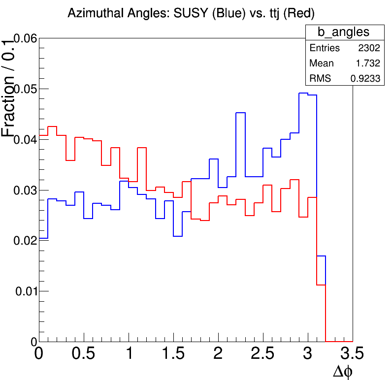
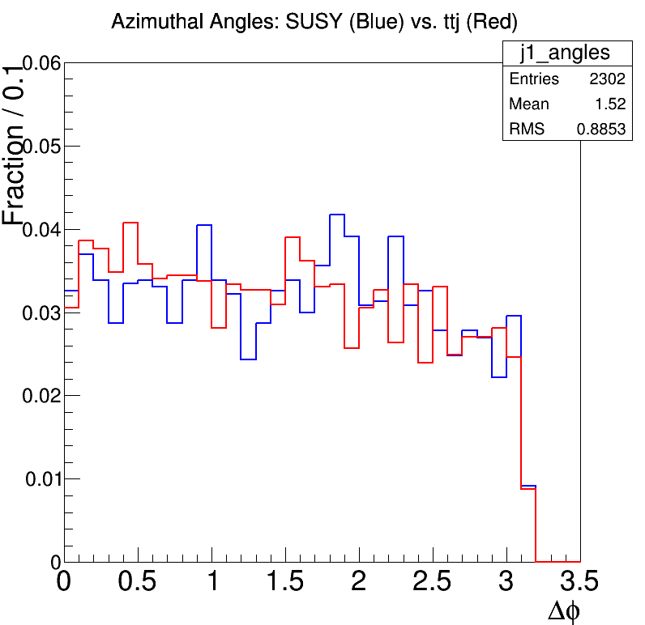
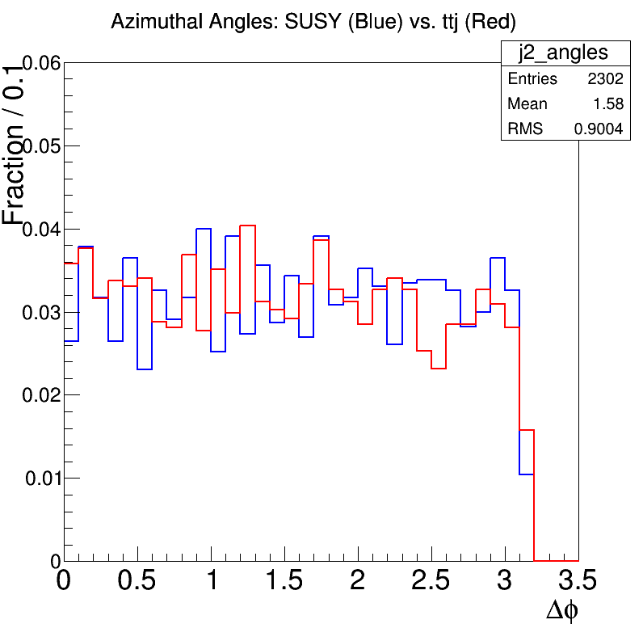
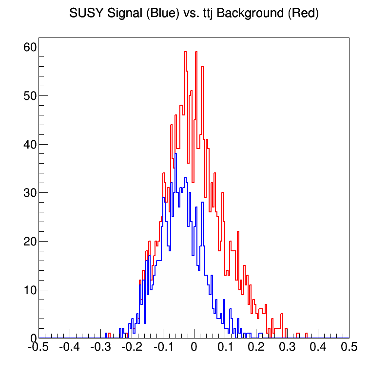

## Searching for Supersymmetric Top Quarks at the LHC
[Onkur Sen](http://onkursen.com/single) and [Dr. Paul Padley](http://www.bonner.rice.edu/padley/)
Rice University
[github.com/onkursen/squark-search](http://github.com/onkursen/squark-search)
Motivation and Background
The Stop Quark
- Stop quark = top squark = supersymmetric top quark
- Expected decay mode:
\[ \tilde{t} \to t + \tilde{\chi}_1^0 \]
where \( \tilde{\chi}_1^0 \) is lightest supersymmetric particle (LSP)
- Our goal: use machine learning to optimize the search for this particular decay mode
## The machine learning problem: Classification
## Description
* **Goal**: separating a set of data points into two categories, signal and background
* What's been tried so far?
* Support vector machines (SVMs): Separate data into two classes using a hyperplane that maximizes the "margin"
* Linear discriminant analysis (LDA): Find linear combination of features that best separates data
* Neural Networks: use connected "neurons" with different layers to adapt
Decision trees
- Make a yes/no decision based on many factors
- Think flowcharts
 ## Boosting
* Combine many weak learners to make a strong learner
* This is a form of **supervised learning**: train on data for which the result is known, then apply to new data
* AdaBoost (adaptive boosting): most common boosting algorithm
### Our approach:
### Boosted decision trees
### (BDTs)
## Context
* In our case, data = **jets**
* Representation of collision result
* One jet = one final particle
* BDTs have been particularly good for Higgs searches among other CMS analyses
* Phenomenological data from [Dutta et. al.](http://prd.aps.org/abstract/PRD/v86/i7/e075004) provides a proposed search mechanism for squarks
* We are extending using BDTs
* Use variables detailed in paper as checkpoints for learning
## Boosting
* Combine many weak learners to make a strong learner
* This is a form of **supervised learning**: train on data for which the result is known, then apply to new data
* AdaBoost (adaptive boosting): most common boosting algorithm
### Our approach:
### Boosted decision trees
### (BDTs)
## Context
* In our case, data = **jets**
* Representation of collision result
* One jet = one final particle
* BDTs have been particularly good for Higgs searches among other CMS analyses
* Phenomenological data from [Dutta et. al.](http://prd.aps.org/abstract/PRD/v86/i7/e075004) provides a proposed search mechanism for squarks
* We are extending using BDTs
* Use variables detailed in paper as checkpoints for learning
Identifying Two Top Quark Systems
- 2 \(bjj\) groups maximizing transverse momentum
- \( t \to b + W \to b + 2j \)
- Calculate M3 for both
- Calculate M2 for both (invariant mass of jets)
- Least-squares error (M3 \(\leftrightarrow t\), M2 \(\leftrightarrow W\))
- Top quark A = Better combination
- Top quark B = best from rest of system
## BDT implementation
* Package: [ROOT TMVA](http://tmva.sourceforge.net/)
* Variables/factors considered
* M3 of top quark A
* M3 of top quark B
* M2 of top quark A
* M2 of top quark B
* Tranverse momentum azimuthal angle of bottom quark
* Tranverse momentum azimuthal angle of 2 jets
* Train with SUSY as signal, ttj as background
Distributions of Variables
SUSY vs ttj
Azimuthal Angles
| Bottom Quark |
Jet 1 |
Jet 2 |
|  |
 |
 |
Signal-Background Separation
Possibility of separation through cuts

## Remaining tasks
* Use trained BDT to classify events from phenomenological data
* Measure performance on signal, background, and mix
* Examine individual decision trees more precisely to determine viability of approach
* Don't want to use them blindly